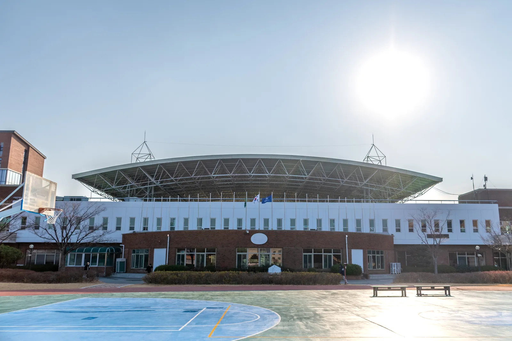

이곳은 어떤 곳인가요?
주로 학관이라고 불리는 학생회관은 평봉필드를 사이에 두고 채플과 마주보고 있습니다. 학생들이 학생식당을 이용하는 가장 큰 이유는 학생식당과 동아리 방입니다. 1층에는 따스한동, 든든한동, H:PLATE를 비롯한 학생식당과 애인트라고 불리는 베이커리 겸 카페, 애플 인 더 트리가 존재합니다. 또한, 2층과 3층에는 동아리방이 있어 많은 학생들이 이곳을 찾고 있습니다.
핫플레이스
학생회관 안에서 꼭 가볼 만한 곳이에요.

건물 소개
주로 학관이라고 불리는 학생회관은 평봉필드를 사이에 두고 채플과 마주보고 있습니다. 학생들이 학생식당을 이용하는 가장 큰 이유는 학생식당과 동아리 방입니다. 1층에는 따스한동, 든든한동, H:PLATE를 비롯한 학생식당과 애인트라고 불리는 베이커리 겸 카페, 애플 인 더 트리가 존재합니다. 또한, 2층과 3층에는 동아리방이 있어 많은 학생들이 이곳을 찾고 있습니다.
학생회관 안에서 꼭 가볼 만한 곳이에요.